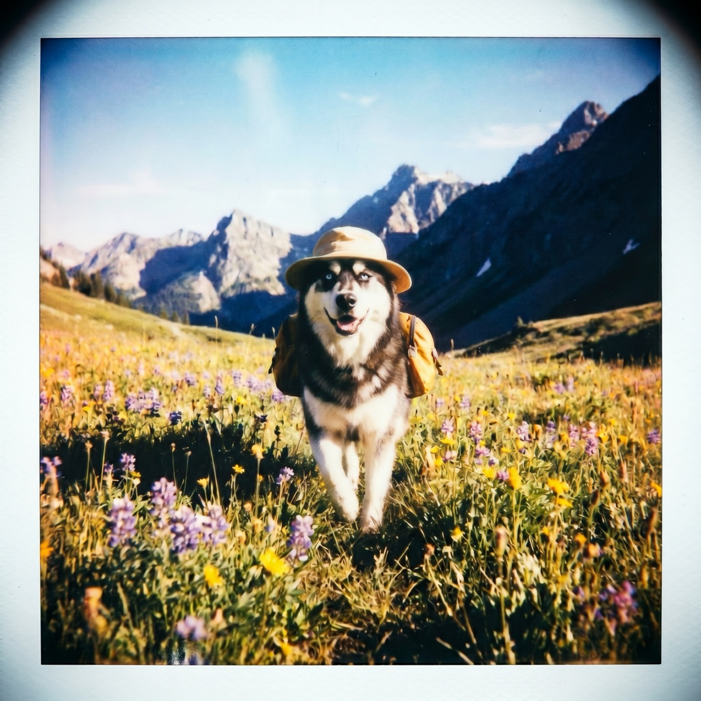

Can Huskies Handle Hot Weather? A Care Guide
Huskies look like they belong in a snowstorm, so it is fair to wonder how they cope when summer arrives. The good news: plenty of huskies live happy lives in warm climates. The catch: that famous coat changes the rules, and a few mistakes can put a husky in real danger. Here is how to keep yours cool and safe.
The double coat cuts both ways
A Siberian husky's coat is not just for looks. It is a double coat: a dense, woolly undercoat under a layer of longer guard hairs. People assume all that fur must be miserable in summer, but the coat is actually a two-way insulator. It traps warm air against the body in winter and helps block heat and sun from reaching the skin in summer. The American Kennel Club's Siberian husky breed profile describes that thick double coat and the heavy seasonal shedding that comes with it.
This leads to the single most important husky-in-summer rule: do not shave your husky. Shaving removes the coat's ability to insulate against heat and sun, exposes pale skin to sunburn, and can change how the coat grows back. Brush out the loose undercoat instead so air can move through it. A clean, well-groomed coat cools better than a shaved one.

Huskies do run hot, so watch closely
Being built for the Arctic means a husky is more heat-sensitive than a short-coated desert breed. They can overheat, and because they are high-energy dogs who love to run, they will sometimes push past their limits before they show it. Learn the early signs of trouble:
- Excessive, heavy panting that does not slow down
- Bright red gums or tongue and thick drool
- Lethargy, stumbling, or disorientation
- Vomiting or diarrhea
These can signal heatstroke, which is a medical emergency. The ASPCA's hot weather safety tips are a good baseline for any dog, and they apply doubly to a coated northern breed.
How to keep a husky comfortable in summer
- Shift exercise to the cool hours. Early morning and after sunset. Save the long runs for when the pavement and the air have cooled off.
- Always have water and shade. A husky burning energy in the heat needs constant access to both.
- Offer cool surfaces. A tile floor, a shaded yard, a cooling mat, or a kiddie pool gives your husky a way to dump heat through the belly and paws.
- Keep the air conditioning honest. On the hottest days, indoors with airflow is the right call. Huskies are happiest somewhere cool to retreat to.
- Check the pavement. Press the back of your hand to the sidewalk for seven seconds. If you cannot hold it, it is too hot for paws.
- Never leave your husky in a parked car.
Hot-climate huskies can absolutely thrive
None of this means a husky cannot live in Texas or Arizona. It means you manage the heat instead of ignoring it. Burn their considerable energy when it is cool, keep them groomed and hydrated, give them somewhere cool to lounge, and respect the warning signs. Do that, and a husky can be just as content in a warm state as in a snowy one. If you are weighing breeds for your climate, our roundups of dog breeds that handle heat best (and worst) and dog breeds built for cold weather put the husky in context.
Plan the day around the heat
With a heat-sensitive breed, timing is everything, and that comes down to knowing the forecast before you commit to a hike. WeatherPets puts the day's high and a real-time Live Activity right on your phone, narrated by your own dog, so deciding between a sunrise adventure and a lazy indoor afternoon takes one quick, genuinely fun look.
Gear that helps: a cooling mat gives a hot husky a cool surface to stretch out on indoors. See our full picks in the best cooling mats for dogs.
WeatherPets is an Amazon Associate and may earn from qualifying purchases, at no extra cost to you.